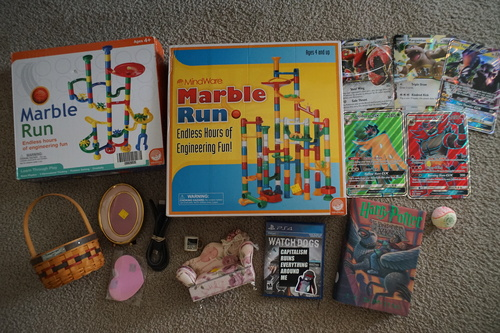

I discovered I could check out manga at the public library so I'm living my teenage dream and reading a whole bunch lately! I convinced Ryan to sign up for a library card so I could check everything out.
First one I grabbed was No. 6. I loved it!!! I gotta watch the anime now. Long haired domestic terrorist x smart and sweet sheltered boy? Do they even make better pairings than that? It was rated 13+, but I honestly think they should have gone 16+, and not because of the sex scenes, which there were exactly 0 of. It was actually very unspicy, but that made the few kisses more special.
Ryan bought me Death Note Short Stories! I was having a grand old time reading about Donald Trump buying a Death Note, but they couldn't write their way out of Tanaka making bank, so they pulled bullshit AGAIN. Just let him win, guys!!! Good parts: L shirtless, L in a washing machine, commentary on Japan's life expectency, really stupid 4koma, Matsuda, 1 panel Matt cameo.
The library has all of Furuba, which... I'm not sure I should own all 23 volumes. Well... maybe if it's REALLY good....
I was going through my drive looking at what kind of dollfoto I saved in the past. It was really a trip! Lots of cute boys that are still my taste. One thing I didn't like was that anything not saved from dA (saves username in filename) did not have ANY information on who took the dang photo. Who owns all these cute boys?! Google Images brings up nothing.
I've finally come to appreciate the watermark. Thank you to everyone who led me back to their name, site, or dA! No thank you to everyone who left a watermark so small I couldn't read it. C'mon!!! What's the point?!
There's still a treasure trove of dolls on dA. Some people disabled their accounts, but it's nothing like the photobucket purge of yesteryear. It will be a true shame when dA closes and these are lost.
It really makes you wonder where the owners went. Did they sell all their dolls? Did they box them up and forget them in the closet? I hope we will see them return (and maybe release their boys to us)
for Ryan's mom
they do not fit in the 25th anniversary binders!! RUDE
missing the inner plastic but my mom will like it
The cashier thought this was worthless and told me to just take it.
I'm gonna put my bears on it
My friend recommended this to me but I haven't spoken to him in over 10 years now. I wonder what he's up to!
I removed vandalism and will keep it in my notebook
Ryan won't play with me anymore after learning I cannot kick it to save my life.